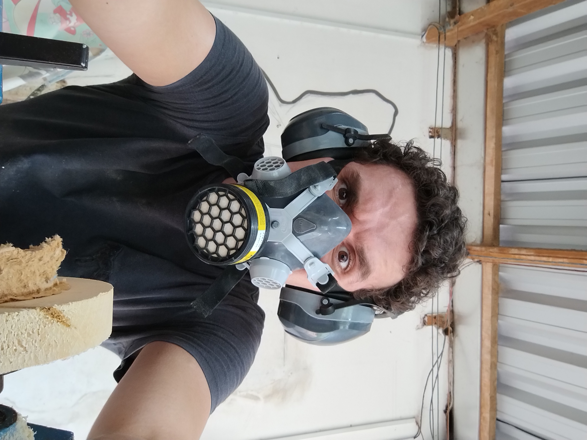
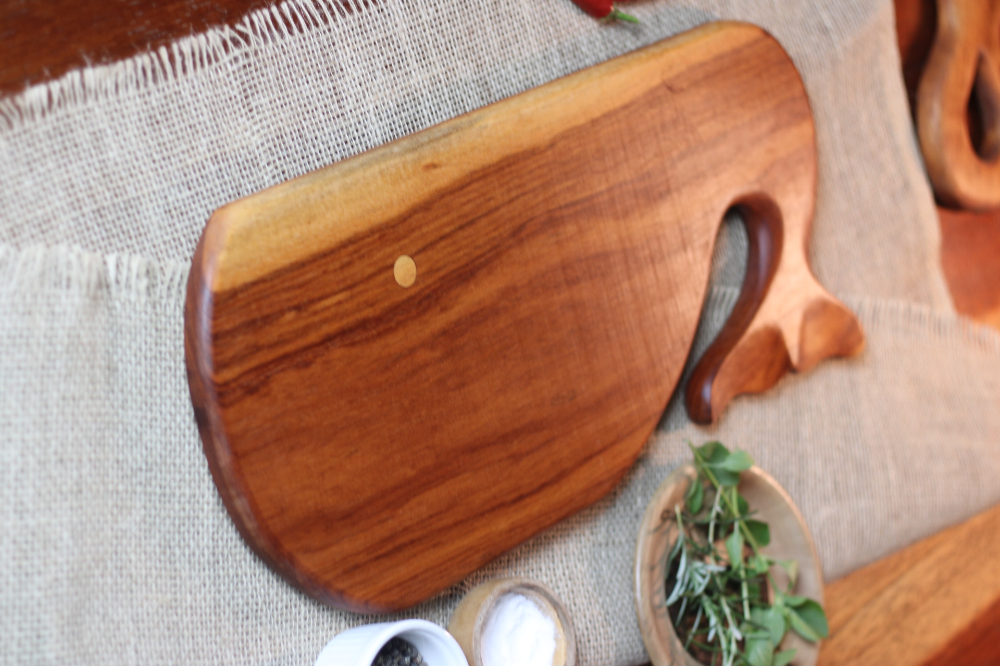
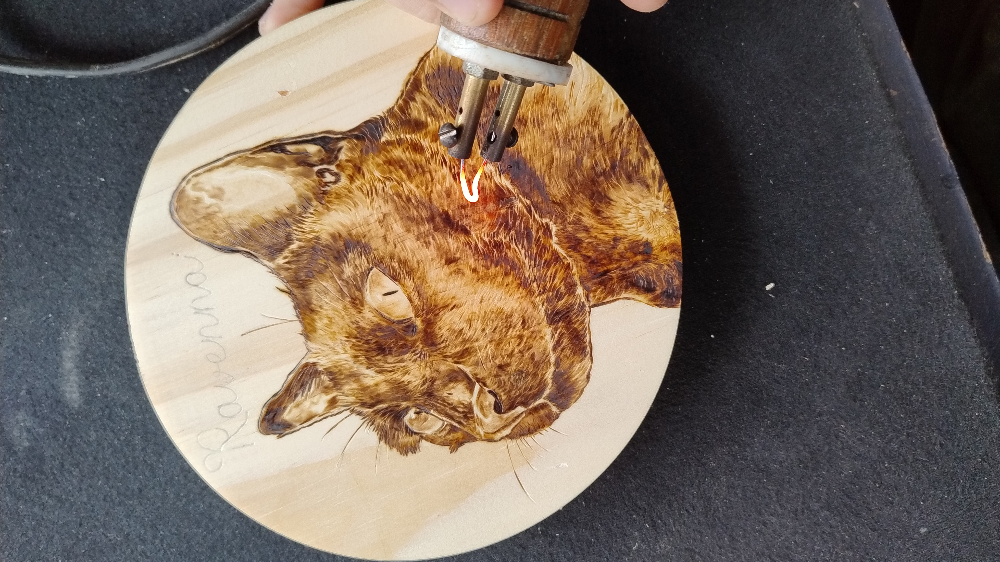

Sobre mim

Olá! Meu nome é Rodrigo Dias, e sou apaixonado por transformar madeira em peças únicas e funcionais.
No meu trabalho como marceneiro, crio tábuas de corte, tigelas e outros artigos para cozinha que
combinam utilidade e beleza. Cada peça recebe um toque especial através da técnica de pirogravura,
que permite gravar desenhos exclusivos na madeira, tornando cada criação verdadeiramente única.
Atualmente, estou expandindo minhas habilidades ao aprender desenvolvimento front-end, um novo
universo que me ajuda a conectar minha arte ao mundo digital. Esse aprendizado tem sido uma forma
incrível de compartilhar minha paixão e criatividade, permitindo que mais pessoas descubram e
apreciem o que faço. Seja no trabalho com madeira ou no desenvolvimento de um site, minha dedicação
é sempre criar algo que inspire e encante.
Meus serviços

Transformo madeira em peças que unem funcionalidade e arte para sua cozinha e decoração.
Meu trabalho inclui a criação de tábuas de corte, tigelas, pratos e cumbucas, todas cuidadosamente
feitas à mão. Além disso, utilizo a técnica de pirogravura para personalizar cada peça com padrões
exclusivos, garantindo um toque único e especial.
Também ofereço peças decorativas com ilustrações detalhadas de pets e animais, feitas com a mesma técnica
de pirogravura. Seja para uso diário na cozinha ou como um presente especial, cada peça reflete minha
paixão pelo artesanato e o compromisso
com qualidade e beleza.
Minhas habilidades

Minha experiência com marcenaria vai além do simples trabalho com madeira – é uma combinação de técnica,
paciência e paixão. Domino processos como corte, modelagem e acabamento de peças, garantindo
durabilidade e qualidade em cada criação.
A pirogravura é uma das minhas especialidades, uma técnica que exige precisão e criatividade para
transformar cada peça em uma obra de arte única. Também tenho um olhar apurado para o design funcional,
equilibrando estética e praticidade, especialmente em artigos para cozinha. Minha dedicação a cada
detalhe faz com que todas as peças sejam únicas, refletindo minha habilidade e amor pelo ofício.
Contato
Tem um projeto em mente? Entre em contato
Redes Sociais
Confira outras partes do meu trabalho, como fotos e o que estou produzindo atualmente, nas minhas redes
sociais!
Instagram: rodrigo.tabuas
Pinterest: Pinterest
E-mail: rodrigo.d.leber@gmail.com